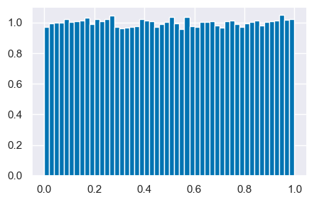
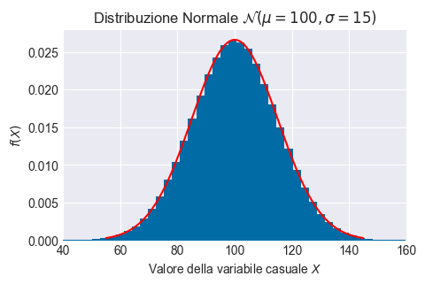
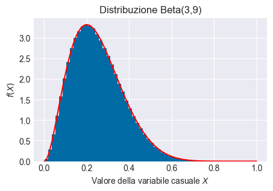
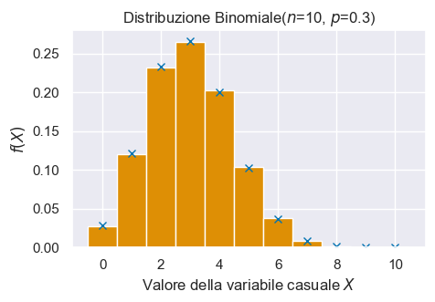
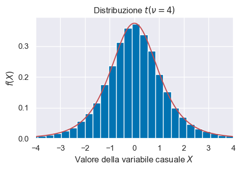
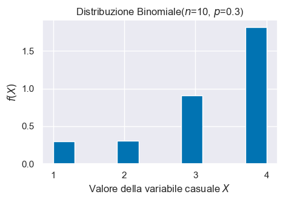

Generazione di numeri casuali
Contents
25. Generazione di numeri casuali#
In questo insegnamento introdurremo molti concetti tramite la simulazione. Pertanto deve essere ben chiaro come sia possibile generare numeri casuali da varie distribuzioni di probabilità. In questo capitolo esamineremo [NumPy] (https://numpy.org/doc/stable/reference/random/generator.html#numpy.random.default_rng) dato che questo modulo offre generatori di numeri casuali per tutte le principali distribuzioni di probabilità.
import numpy as np
import pandas as pd
from matplotlib import pyplot as plt
import seaborn as sns
from scipy.constants import golden
import scipy.stats as st
%matplotlib inline
plt.rc('figure', figsize=(5.0, 5.0/golden))
sns.set_theme()
sns.set_palette("colorblind")
SEED = 12345
rng = np.random.default_rng(SEED)
Tutto ciò che succede sul nostro computer è generato da un algoritmo. L’algoritmo che genera i numeri “casuali” su computer è necessariamente deterministico. Questo diventa chiaro quando notiamo che otteniamo sempre lo stesso insieme di numeri casuali quando usiamo lo stesso seme (punto di partenza), su qualsiasi macchina o per diverse ripetizioni sulla stessa macchina. Per generare un numero veramente casuale sui nostri computer è necessario ottenere dei dati casuali da una fonte esterna; questa fonte esterna può essere la nostra sequenza di tasti, i movimenti del mouse, i dati sulla rete, ecc. La necessità di ottenere dei numeri veramente casuali nasce solo in contesti specifici, per esempio nei contesti legati alla sicurezza (crittografia, ecc.). Per gli scopi della data science, invece, sono sufficienti i numeri pseudo-casuali generati dal computer. In Python, il principale generatore di numeri (pseudo)casuali è NumPy.
Il generatore rng può usare una serie di metodi per generare numeri casuali estratti da una varietà di distribuzioni di probabilità. Oltre agli argomenti specifici della distribuzione, ogni metodo prende un argomento size il cui valore predefinito è None. Se size è None, viene generato e restituito un singolo valore. Se size è un numero intero, viene restituito un array 1-D riempito con i valori generati.
25.1. Distribuzione uniforme#
Consideriamo la distribuzione uniforme: uniform([low, high, size]). Genero un singolo valore:
rng.uniform(0, 1)
0.22733602246716966
Lo genero una seconda volta:
rng.uniform(0, 1)
0.31675833970975287
Genero 20 valori:
rng.uniform(0, 1, size=20)
array([0.79736546, 0.67625467, 0.39110955, 0.33281393, 0.59830875,
0.18673419, 0.67275604, 0.94180287, 0.24824571, 0.94888115,
0.66723745, 0.09589794, 0.44183967, 0.88647992, 0.6974535 ,
0.32647286, 0.73392816, 0.22013496, 0.08159457, 0.1598956 ])
Creo un istogramma.
plt.hist(rng.uniform(0, 1, size=100000), bins=50, density=True)
(array([0.97051065, 0.99501092, 1.00101099, 1.00051098, 1.02151121,
1.00301101, 1.00851107, 1.0110111 , 1.03201133, 0.99201089,
1.02101121, 1.01051109, 1.02201122, 1.04551148, 0.97151066,
0.96051054, 0.96451059, 0.97101066, 0.9745107 , 1.02101121,
1.01201111, 1.00651105, 0.97301068, 0.99201089, 1.00301101,
1.03751139, 0.9930109 , 0.95601049, 1.03651138, 0.97651072,
0.97251067, 1.00351101, 1.00301101, 1.00951108, 0.98051076,
0.96701061, 1.00601104, 1.01251111, 0.98751084, 0.97151066,
0.99501092, 1.00551104, 1.01351112, 0.97951075, 1.00501103,
1.00801106, 1.01201111, 1.04901151, 1.01601115, 1.0200112 ]),
array([5.17676036e-06, 2.00049572e-02, 4.00047377e-02, 6.00045182e-02,
8.00042987e-02, 1.00004079e-01, 1.20003860e-01, 1.40003640e-01,
1.60003421e-01, 1.80003201e-01, 2.00002982e-01, 2.20002762e-01,
2.40002542e-01, 2.60002323e-01, 2.80002103e-01, 3.00001884e-01,
3.20001664e-01, 3.40001445e-01, 3.60001225e-01, 3.80001006e-01,
4.00000786e-01, 4.20000567e-01, 4.40000347e-01, 4.60000128e-01,
4.79999908e-01, 4.99999689e-01, 5.19999469e-01, 5.39999250e-01,
5.59999030e-01, 5.79998811e-01, 5.99998591e-01, 6.19998372e-01,
6.39998152e-01, 6.59997932e-01, 6.79997713e-01, 6.99997493e-01,
7.19997274e-01, 7.39997054e-01, 7.59996835e-01, 7.79996615e-01,
7.99996396e-01, 8.19996176e-01, 8.39995957e-01, 8.59995737e-01,
8.79995518e-01, 8.99995298e-01, 9.19995079e-01, 9.39994859e-01,
9.59994640e-01, 9.79994420e-01, 9.99994201e-01]),
<BarContainer object of 50 artists>)

25.2. Distribuzione normale#
Estraiamo ora dei campioni casuali dalla distribuzione Gaussiana, normal([loc, scale, size]). Inizio con un solo valore valore estratto dalla distribuzione del QI, ovvero, \(\mathcal{N}(\mu = 100, \sigma = 15)\):
x = rng.normal(loc=100, scale=15, size=1)
print(x)
[94.11309172]
x = rng.normal(loc=100, scale=15, size=1)
print(x)
[91.09935884]
Ora genero un grande numero (1000000) di valori casuali dalla \(\mathcal{N}(\mu = 100, \sigma = 15)\). Con questi valori creo un istogramma e a tale istogramma sovrappongo la funzione di densità \(\mathcal{N}(\mu = 100, \sigma = 15)\). In questo modo posso accertarmi che i numeri casuali che ho ottenuto si riferiscano veramente alla densità desiderata.
Per trovare la densità della distribuzione normale, uso norm.pdf da scipy.stats.
Si noti rng.normal() per la generazione dei numeri casuali.
n = 1000000
mu = 100
sigma = 15
# create x's
xs = np.linspace(55, 145, 100001)
y_pdf = st.norm.pdf(xs, mu, sigma)
# create random samples
samps = rng.normal(loc=mu, scale=sigma, size=n)
# plot them
plt.plot(xs, y_pdf, color='r')
plt.hist(samps, bins=50, density=True)
plt.title('Distribuzione Normale $\mathcal{N}(\mu=100, \sigma=15)$')
plt.ylabel('$f(X)$')
plt.xlabel('Valore della variabile casuale $X$')
plt.xlim(40, 160)
(40.0, 160.0)

La stessa procedura può essere usata per tutte le distribuzioni implementate da NumPy. Presento alcuni esempi qui sotto.
25.3. Distribuzione Beta#
Per estrarre dei campioni casuali dalla distribuzione Beta uso il generatore rng con beta(a, b[, size]); per la densità Beta uso beta.pdf da scipy.stats.
a = 3
b = 9
# create x's
xs = np.linspace(0, 1, 100001)
y_pdf = st.beta.pdf(xs, a, b)
# create random samples
samps = rng.beta(a=a, b=b, size=n)
# plot them
plt.plot(xs, y_pdf, color='r')
plt.hist(samps, bins=50, density=True)
plt.title('Distribuzione Beta(3,9)')
plt.ylabel('$f(X)$')
plt.xlabel('Valore della variabile casuale $X$')
Text(0.5, 0, 'Valore della variabile casuale $X$')

25.4. Distribuzione binomiale#
Per estrarre dei campioni casuali dalla distribuzione Binomiale uso il generatore rng con binomial(n, p[, size]); per la distribuzione di massa Binomiale uso binom.pmf da scipy.stats.
n = 10
p = 0.3
n_samples = 100001
# create r values
r_values = list(range(n + 1))
# pmf
y_pmf = [st.binom.pmf(r, n, p) for r in r_values]
# create random samples
r_samps = rng.binomial(n=n, p=p, size=n_samples)
plt.plot(r_values, y_pmf, 'x')
plt.hist(r_samps, bins=np.arange(-.5, 11.5, 1), density=True)
plt.title('Distribuzione Binomiale($n$=10, $p$=0.3)')
plt.ylabel('$f(X)$')
plt.xlabel('Valore della variabile casuale $X$')
Text(0.5, 0, 'Valore della variabile casuale $X$')

25.5. Distribuzione \(t\) di Student#
Per estrarre dei campioni casuali dalla distribuzione \(t\) di Student uso il generatore rng con standard_t(df, size=None); per la densità \(t\) di Student uso t.pdf da scipy.stats.
df = 4
size = 100001
# create x's
xs = np.linspace(-4, 4, 100001)
y_pdf = st.t.pdf(xs, df=df)
# create random samples
samps = rng.standard_t(df=df, size=size)
# plot them
fig, ax = plt.subplots()
plt.plot(xs, y_pdf, color='r')
plt.hist(samps, bins=150, density=True)
plt.title('Distribuzione $t(\\nu=4)$')
plt.ylabel('$f(X)$')
plt.xlabel('Valore della variabile casuale $X$')
plt.xlim(-4, 4)
(-4.0, 4.0)

25.6. Distribuzione arbitraria di una variabile casuale distreta#
Con la funzione random.choices è possible specificare i valori di una variabile casuale discreta.
import random
x_rv = [1, 2, 3, 4]
x_sample = random.choices(x_rv, k=10)
print(x_sample)
[1, 4, 3, 4, 3, 4, 3, 4, 4, 3]
Se aggiungiamo l’argomento k possiamo definire i pesi (indirettamente, le probabilità) dei diversi valori della variabile casuale che sono stati specificati. Nell’esempio, i pesi [1, 1, 3, 6] indicano che, nella distribuzione, il valore 4 è presente con una frequenza di sei volte maggiore dei valori 1 e 2.
x = random.choices(x_rv, weights=[1, 1, 3, 6], k=10)
print(x)
[3, 1, 4, 4, 4, 3, 3, 4, 3, 4]
x = random.choices(x_rv, weights=[1, 1, 3, 6], k=100000)
bins = plt.hist(x, density=True)
plt.title('Distribuzione Binomiale($n$=10, $p$=0.3)')
plt.ylabel('$f(X)$')
plt.xlabel('Valore della variabile casuale $X$')
plt.xticks(x_rv)
([<matplotlib.axis.XTick at 0x7f85599966e0>,
<matplotlib.axis.XTick at 0x7f85599966b0>,
<matplotlib.axis.XTick at 0x7f8559976b90>,
<matplotlib.axis.XTick at 0x7f85599750c0>],
[Text(1, 0, '1'), Text(2, 0, '2'), Text(3, 0, '3'), Text(4, 0, '4')])

Consideriamo il campione di valori casuali che abbiamo ottenuto, Se dividiamo la frequenza relativa del valore 4 e quella del valore 1 otteniamo il rappporto che ci aspettiamo:
print(bins)
(array([0.29686667, 0. , 0. , 0.30623333, 0. ,
0. , 0.91093333, 0. , 0. , 1.8193 ]), array([1. , 1.3, 1.6, 1.9, 2.2, 2.5, 2.8, 3.1, 3.4, 3.7, 4. ]), <BarContainer object of 10 artists>)
1.8221 / 0.30036667
6.0662522909083085
25.7. Commenti e considerazioni finali#
Dalla libreria scipy.stats utilizzo
.pdfper ottenere i valori della funzione di densità di probabilità oppure.pmfper ottenere i valori della distribuzione di massa di probabilità;.ppfper ottenere i quantili della distribuzione;.cdfper ottenere la probabilità – nel caso di una variabile casuale continua, il valore della funzione di ripartizione, ovvero l’area sottesa alla curva di densità nella coda di sinistra; nel caso di una variabile casuale discreta, la somma delle probabilità della distribuzione di massa di probabilità dal valore minimo fino al valore indicato (incluso).
Dalla libreria numpy utilizzo
.randomper ottenere un campione di numeri casuali da una distribuzione.
25.8. Watermark#
%load_ext watermark
%watermark -n -u -v -iv -w -p pytensor
Last updated: Wed Jan 11 2023
Python implementation: CPython
Python version : 3.10.8
IPython version : 8.7.0
pytensor: 2.8.11
seaborn : 0.12.2
pandas : 1.5.2
numpy : 1.24.1
matplotlib: 3.6.2
scipy : 1.10.0
Watermark: 2.3.1